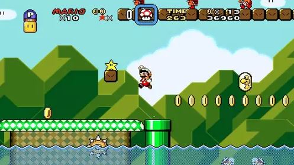

Super Mario World

Fecha de lanzamiento: 21 de noviembre de 1990
Género: Plataformas
Desarrollador: Nintendo
Copias vendidas: 20.6 millones
Sinopsis: Mario y Luigi se embarcan en una aventura en Dinosaur Land para rescatar a la Princesa Peach y derrotar a Bowser. El juego introdujo a Yoshi, el dinosaurio amigo de Mario.